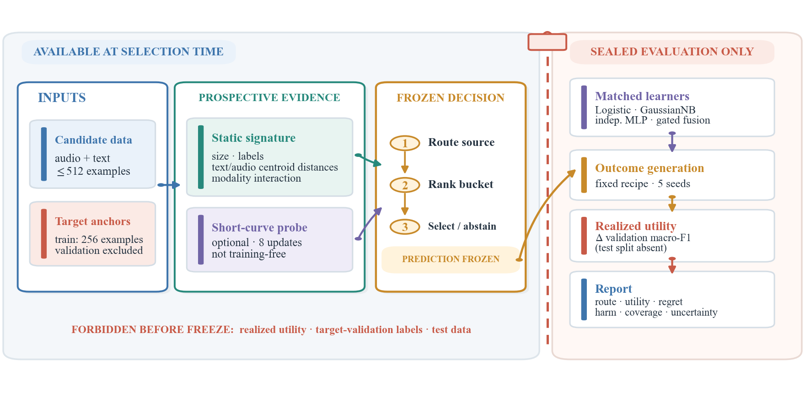
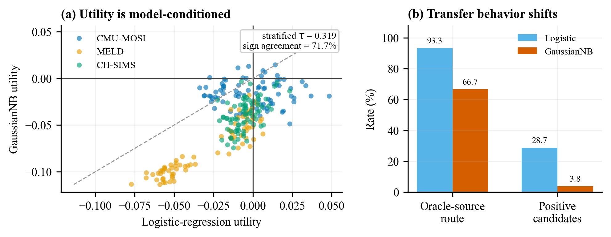
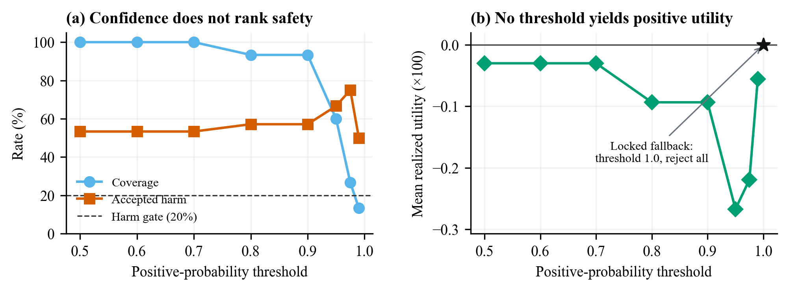

Anonymous ICLR 2027 submission
Stress-Testing Prospective Multimodal Dataset Utility Prediction
Can we screen audio–text training sources before paying the cost of training on them? MuSeSelect tests that premise under a strict information boundary—and finds that corpus routing is easier than ranking nearby buckets.
01 — Problem
Dataset quality is not a property of the dataset alone.
Utility depends jointly on the candidate source, target task, downstream learner, training recipe, and evaluation metric. A clean dataset can still be harmful for a particular target. A score computed from the eventual transfer outcome arrives too late to save compute.
We therefore distinguish source routing, within-source bucket ranking, and selective abstention. Each decision is evaluated only after its prediction has been sealed.
02 — Protocol
A visible boundary between evidence and evaluation.
The selector sees candidate data, target-training anchors, model metadata, and low-cost signatures. Realized utility, validation labels, and test data stay sealed.

Choose a source
Compare corpus-level compatibility using common frozen representations.
Order its buckets
Ask whether the same evidence resolves smaller, more similar candidate blocks.
Select or abstain
Calibrate rejection on independent targets without opening held-out utilities.
03 — Findings
The strongest result is also the narrowest one.
Centroid distance routes sources reliably for one fixed logistic recipe. It does not establish reliable within-source utility ordering, and its behavior changes with the downstream learner.
What held
97.8%Logistic source-route accuracy
44 of 45 repeated decisions, covering three independent target corpora.
What did not
+0.00105Classifier gain over Curve-19
The target-cluster interval crosses zero and the exact p-value is 0.50.
Why conditioning matters
53.3–80.0%Alternative-learner route range
Gated fusion, GaussianNB, and neural MLP alter routes and utility prevalence.


04 — Public artifact
Enough code to audit the claim, not a dump of the lab workspace.
GitHub
Information-boundary types, static signatures, frozen decisions, post-freeze metrics, synthetic examples, and tests.
Repository pending →Hugging Face
Paper-level aggregate tables, corpus provenance, and a synthetic schema example. No raw media or transcript is redistributed.
Dataset pending →Reproducibility boundary
The public code reproduces method definitions and reporting schemas. Full experiments still require official third-party datasets.
Paper–code map →05 — Citation
Anonymous during review.
@inproceedings{anonymous2027museselect,
title = {Stress-Testing Prospective Multimodal
Dataset Utility Prediction},
author = {Anonymous Authors},
booktitle = {Submitted to ICLR},
year = {2027}
}